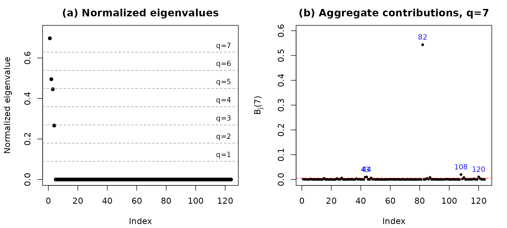
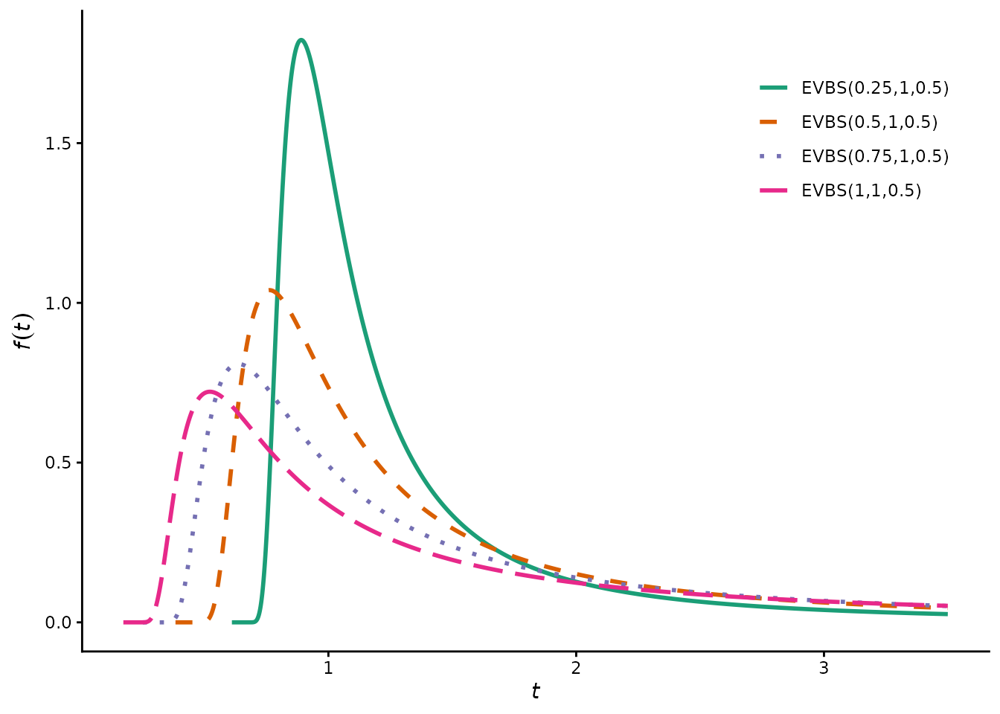

Local influence diagnostics for the EVBS regression model
Raydonal Ospina
Source:vignettes/evbsreg.Rmd
evbsreg.RmdIntroduction
The evbsreg package implements local influence diagnostics for the Extreme-Value Birnbaum–Saunders (EVBS) regression model. This vignette walks through the complete workflow: fitting the model, diagnosing influential observations, assessing model adequacy, and interpreting the results, using the bundled Itajaí wind gust dataset.
The data
The itajai dataset contains 124 monthly maximum wind
gust speeds and the corresponding daily mean atmospheric pressure,
recorded at INMET station A-868 in Itajaí, Brazil, from July 2010 to
October 2020.
data(itajai)
str(itajai)
#> 'data.frame': 124 obs. of 3 variables:
#> $ month : int 1 2 3 4 5 6 7 8 9 10 ...
#> $ wind : num 11.7 16.4 10.5 17.2 11.2 12.3 14 17.1 13.7 14.8 ...
#> $ pressure: num 1020 1013 1015 1009 1008 ...
summary(itajai$wind)
#> Min. 1st Qu. Median Mean 3rd Qu. Max.
#> 8.20 12.15 14.30 14.73 17.02 33.90Observation 82 is the catastrophic event of 26 April 2017 (33.9 m/s).
Fitting the model
The design matrix must include an intercept column. We model the location of the log-EVBS distribution as a linear function of atmospheric pressure.
X <- cbind(1, itajai$pressure)
fit <- evbsreg.fit(X, itajai$wind)
data.frame(
Parameter = c("beta0", "beta1", "alpha", "gamma"),
Estimate = round(fit$coeff, 4),
SE = round(c(fit$stderrors, fit$stderroralpha, fit$stderrorgama), 4)
)
#> Parameter Estimate SE
#> 1 beta0 25.5148 3.3338
#> 2 beta1 -0.0227 0.0033
#> 3 alpha 0.1857 0.0127
#> 4 gamma -0.1551 0.0472Both regression coefficients are highly significant:
round(fit$pvalues, 4)
#> x1 x2
#> 0 0Local influence diagnostics
The cnc_diagnostics() function computes the conformal
normal curvature diagnostics from the fitted object.
diag <- cnc_diagnostics(fit)
## Top four normalized eigenvalues
round(head(diag$eigenvalues_norm, 4), 5)
#> [1] 0.69678 0.49511 0.44547 0.26630
## Observations flagged at q = 7
which(diag$Bj[7, ] > diag$bq[7])
#> [1] 27 43 44 47 82 87 108 110 120The two-panel diagnostic figure shows the normalized eigenvalues (left) and the aggregate contributions (right). Observation 82 dominates.
plot_cnc(diag, q = 7)
Deletion analysis
We refit the model without the flagged observation and measure the relative change in each parameter.
fit82 <- evbsreg.fit(X[-82, ], itajai$wind[-82])
rc <- 100 * (fit82$coeff - fit$coeff) / abs(fit$coeff)
names(rc) <- c("beta0", "beta1", "alpha", "gamma")
round(rc, 2)
#> beta0 beta1 alpha gamma
#> -3.24 3.64 0.25 -73.67The tail-shape parameter changes by about , while the regression coefficients and the scale parameter change by less than . The influence is therefore concentrated almost entirely on the tail.
Model adequacy
Randomized quantile residuals should be approximately standard normal under a correct specification.
r <- rqrandomized(X, itajai$wind)
shapiro.test(r)
#>
#> Shapiro-Wilk normality test
#>
#> data: r
#> W = 0.98727, p-value = 0.3021
envelope_qq(X, itajai$wind, nrep = 100)Density shapes
The package also provides the density-plotting functions used to produce Figures 1 and 2 of the paper.

Reproducing the full study
Five standalone scripts reproduce every figure, table, and simulation
in the paper. After installation they are available via
system.file():
# Density figures (Figures 1-2)
source(system.file("scripts/script_01_density_figures.R", package = "evbsreg"))
# Itajai application (Tables 1-3, Figures 3-6)
source(system.file("scripts/script_02_itajai_application.R", package = "evbsreg"))
# Monte Carlo (Tables 4-9); set m <- 500 inside for a quick check
source(system.file("scripts/script_03_simulation_scenario1.R", package = "evbsreg"))
source(system.file("scripts/script_04_simulation_scenario2.R", package = "evbsreg"))
source(system.file("scripts/script_05_simulation_scenario3.R", package = "evbsreg"))